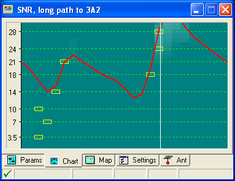
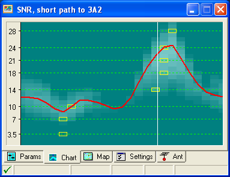

Paul, Here is a good example of unpredicted propagation. The long and short path charts to 3A2 are below and it doesn’t show any prop to that area. The short path looks better though. BTW, I cannot hear her on my G5RV in Truckee. 73, - Craig, AE6RR   From: Chat1 [mailto:chat1-bounces@ncdxc.org] On Behalf Of paul@n6pse.com Laura, 3A2MD has a nice signal, via the Long Path, 14203 simplex.
Paul N6PSE |